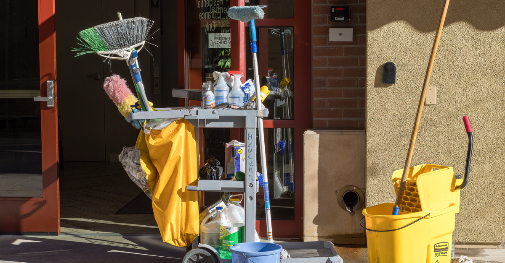

적격심사 통과선과 투찰률 — 85점·89.995%가 내 입찰금액을 정한다

용역 입찰에서 낙찰은 "가장 싸게 쓴 사람"의 승리가 아닙니다. 낮은 가격은 심사에 올라갈 자격일 뿐입니다. 그 아래에 85점이라는 통과선과 89.995%(또는 82.495%)라는 금액 기준선이 깔려 있죠. 2026년 5월 26일부터 이 금액 기준선(낙찰하한율)이 전 분야 2%포인트 올라갔습니다. Cleaning·경비·시설관리처럼 사람이 전부인 용역으로 공공계약을 노리는 1인·소규모 사업자라면, 내 입찰금액의 하한을 저 두 숫자가 정한다는 사실만 먼저 잡아두면, 투찰 실수의 절반은 애초에 사라집니다. 이 글은 적격심사가 실제로 무엇을 심사하고, 통과선과 하한율이 금액을 어떻게 조이고, 서류·실적·거절 후 수순이 어떻게 돌아가는지를 순서대로 정리합니다.
30초 요약
| 항목 | 내용 |
|---|---|
| 무엇 | 예정가격 이하 최저가 입찰자부터 계약이행능력(이행실적·경영상태·기술능력 등)을 심사해 통과점이면 낙찰자로 정하는 방식 |
| 누가 | 조달청 집행 일반용역 입찰 참가자 — 청소·경비·시설물관리·소프트웨어·폐기물처리·운송·보험·수리점검 등 (건설·정보통신 소관 용역은 별도 기준) |
| 통과선 | 종합평점 85점 (소프트웨어 중기경쟁제품·여객육상운송은 88점) |
| 낙찰하한율 (2026.5.26. 이후 공고분) | 시설분야용역 89.995% · 소프트웨어(중기경쟁)·여객운송 87.995% · 고시금액 미만 학술·SW·폐기물·화물·수리·임대차·수요기관지정형 86.245% · 고시금액 이상 82.495% · 보험용역 약 48% |
| 이행실적 기간 | 원칙 최근 5년 — 창업기업·소기업·소상공인은 최근 7년 |
| 서류 기한 | 적격심사서류 제출 통보 후 5일 이내 나라장터 시스템 제출 |
1. 누가 심사받고, 무엇이 심사 대상인가
적격심사는 예정가격 이하로 입찰한 사람 중 낮은 가격순으로 올라가며 계약이행능력을 따지는 방식입니다. 점수가 통과선에 닿는 순간 그 자리에서 낙찰자가 정해지고, 그 아래 점수라면 순서가 빨라도 탈락입니다. 조달청이 집행하는 일반용역은 심사 대상이 조문 정의 그대로 넓습니다 — 학술연구, 청소, 시설물경비, 시설물관리, 소프트웨어, 폐기물처리, 육상운송, 보험, 수리·점검. 반대로 건설기술진흥법·전력기술관리법·정보통신공사업법 소관 용역(설계·감리 등)은 이 기준이 아니라 그 분야의 별도 기준을 따릅니다.
그중에서도 1인·소규모 사업자가 가장 많이 만지는 것이 시설분야용역입니다. 건물 청소, 경비, 시설물관리는 물론이고 방역, 위탁운영, 보조인력 파견처럼 인건비 비중이 높은 행정보조·관리 용역까지 이 분류에 들어갑니다. 사람이 전부인 사업이라면 심사표의 절반이 인력·실적으로 채워진 분류에 속한다고 보면 됩니다.
참고로 입찰공고에 붙는 세 가지 가격 용어는 1호에서 정리했습니다. 여기서는 예정가격(발주기관이 미리 계산해 둔 기준 금액)과 추정가격( 참가자격·계약방식이 갈리는 가격), 그리고 고시금액(세계무역기구 정부조달협정으로 열린 물품·용역의 문턱 금액)만 씁니다. 고시금액 위아래로 심사표와 하한율이 달라지므로, 공고의 추정가격 칸에서 고시금액을 넘는지부터 확인하면 어떤 기준표가 내 것인지 갈립니다.
2. 지원 내용 — 통과점수와 낙찰하한율, 2026년에 바뀐 것
적격심사 점수는 크게 입찰가격 점수와 수행능력 점수(이행실적·경영상태·기술능력 등)를 더해 만듭니다. 수행능력의 세부 배점은 용역 종류별 표(별표)가 정하고, 통과선은 일반용역 공통으로 85점, 소프트웨어용역 중 중소기업자간 경쟁제품과 여객육상운송용역만 88점입니다.
입찰가격 점수는 "투찰률"로 움직입니다. 투찰률 = 내 입찰금액 ÷ 예정가격. 예정가격에 가까운 금액을 쓸수록 감점이고, 표에 정해진 기준 투찰률 이하로 내려가야 만점에 근접합니다. 그 기준 투찰률이 2026년 5월 26일부터 분야별로 2%포인트씩 올랐습니다. 입찰가격 계산식의 기준값이 88에서 90으로 바뀌면서, 만점을 받으려면 이전보다 더 높은 금액을 써야 하는 구조가 됐습니다. 조달청은 개정 이유를 '적정대가 지급'으로 밝혔고, 2017년 이후 9년 만의 조정입니다.
| 용역 분야 | 통과점수 | 낙찰하한율 (2026.5.26. 이후 최초 공고분) |
|---|---|---|
| 시설분야용역 (청소·경비·시설물관리 등) | 85점 | 89.995% |
| 소프트웨어용역(중소기업자간 경쟁제품 대상) · 여객육상운송용역 | 88점 | 87.995% |
| 학술연구·소프트웨어(비경쟁제품)·폐기물처리·화물육상운송·수리점검·임대차·수요기관지정형 — 고시금액 미만 | 85점 | 86.245% |
| 같은 분야 — 고시금액 이상 | 85점 | 82.495% |
| 보험용역 | 85점 | 약 48% (보험료 특성상 가격 구조 자체가 다름) |
이 표를 읽는 실무 요령은 하나입니다. 하한율이 곧 금액의 바닥입니다. 예정가격 2억 원인 청소 용역이라면 하한율 89.995%를 넘기는 1억 7,999만 원 부근이 사실상 마지노선입니다. 그 아래로 쓰면 가격 점수가 깎여 85점을 넘기기 어려워지고, 결과적으로 "싸게 썼는데 탈락"이 됩니다. 반대로 하한 근처에서 낙찰돼도 수행능력 점수가 쌓여 있으면 통과합니다. 경쟁의 승부는 더 낮게가 아니라, 하한 바로 위에서 수행능력을 얼마나 채우느냐로 이동한 셈입니다.
바뀐 기준은 2026년 5월 26일 이후 최초로 공고된 입찰부터 적용됩니다. 그 이전에 공고가 나간 건은 이전 기준이 그대로 유효하니, 오래 걸린 유찰 재공고에서 옛 하한율로 계산하면 오차가 납니다. 같은 흐름으로 지방계약 공사는 2025년 7월 1일부터, 국가계약 시설공사는 2026년 1월 30일부터 같은 폭(+2%포인트)으로 먼저 올라 공사·용역·물품 전 분야 조정이 끝난 상태입니다.
3. 지원 제외 — 이 심사를 아예 통과할 수 없는 경우
적격심사에서 문제가 되는 "결격"은 참가자격과는 별개의 층입니다. 심사항목과 관계없이 낙찰자 결정일·입찰서 제출 마감일 전일·서류 제출일 등 시점별로 정한 기준일에 다음 상태면 탈락입니다. 대표적으로 ① 파산·회생 등 신용도 판단정보 등록 ② 부실처리의무 수행 이력 ③ 입찰 참가자격 제한 기간 중인 자 ④ 허위서류 제출 ⑤ 심사 시점에 국세·지방세 체납이 그대로 남아 있는 경우가 그렇습니다. 체납은 심사 시점 기준으로 풀려 있어야 하므로, 마감 직전 정리보다 입찰공고일 이전에 정리해 두는 것이 안전합니다.
또 하나, 이 글의 통과선·하한율은 조달청이 집행하는 용역 기준입니다. 지자체가 집행하는 용역·물품·공사에는 지방계약 소관 기준과 집행기준이 따로 있으므로(금액 문턱부터 다릅니다), 발주기관이 누구냐에 따라 적용 표를 바꿔야 합니다. 그 판정은 2호의 발주기관 판정표로 해결할 수 있습니다.
4. 서류 — 통보받으면 5일, 심사기준일은 입찰공고일
적격심사 서류는 입찰 전에 내는 것이 아닙니다. 낙찰 순번이 돌아와 계약담당공무원의 제출 통보를 받은 날부터 5일 이내에 나라장터 시스템으로 적격심사신청서와 증빙을 내는 구조입니다. 기간이 짧아 통보를 받고 부랴부랴 서류를 만들면 5일이 모자랍니다. 미리 발급받아 둘 것과 통보 후에야 받을 수 있는 것을 나눠서 챙겨두세요.
| 구분 | 서류 | 포인트 |
|---|---|---|
| 미리 확보 | 일반용역 이행실적증명서 (실적 건별) | 공공기관 외 실적은 계약서·세금계산서 등 증빙을 첨부해야 인정 — 입증은 신청자 몫 |
| 미리 확보 | 중소기업·창업기업 확인서 | 심사기준일은 입찰공고일이지만, 이 확인서만은 서류 제출 마감일까지 발급분 인정 — 단 분기·연 단위 갱신을 미루다 막히면 늦음 |
| 통보 후 제출 | 적격심사신청서·자기평가표, 경영상태 증빙(신용평가), 기술인력 증빙, A/S·보험 관련 서약 | 공고문에 요구 서류가 명시되므로 공고별로 대조 — 5일 기한 역산 |
심사기준일 규칙을 한 줄만 외우세요: 입찰공고일 다음날 이후에 발생·신고·수정된 자료는 평가에서 빠진다. 실적, 재무, 기술인력 모두 공고일을 기준으로 소급해서 인정되므로 "낙찰 받고 나서 사람 뽑기"는 먹히지 않습니다. 이행실적은 계약일이 아니라 이행이 완료된 시점 기준 최근 5년이고, 창업기업·소기업·소상공인은 7년으로 늘어납니다. 1인 사업자가 5년과 7년은 체감이 큰 차이입니다 — 2021년에 끝낸 건이 5년 기준에서는 아슬아슬하지만 7년 기준에서는 확실히 들어갑니다. 단 인정 범위는 공고문이 정합니다. 유사용역·동등이상용역의 정의와 금액·규모 기준은 매 공고마다 명시되니, 우리 실적이 그 정의에 들어가는지는 공고 본문 단계에서 대조하세요.
5. 신청 순서 — 심사표가 정해지기 전에 판정하기
- 1단계 — 발주기관과 분류 확인. 조달청 집행 용역인지, 우리 업종이 일반용역(시설·학술·SW 등) 중 어디인지 정합니다. 건설·정통 소관이면 이 글의 기준이 아닙니다.
- 2단계 — 추정가격으로 기준표 확정. 고시금액 위/아래에 따라 심사표와 하한율이 갈립니다. 표에서 내 분야 행을 찾고, 통과점수(85점·88점)와 하한율을 적어두세요.
- 3단계 — 수행능력 자가 채점. 이행실적(최근 5년·우리 업종 7년)과 경영상태 배점을 채워봅니다. 가격 점수 없이 수행능력만으로 몇 점이 남는지가, 내 입찰금액 재량의 크기입니다.
- 4단계 — 서류 사전 정비. 이행실적증명서 발급, 중소기업·창업기업 확인서 상태 확인, 세무 체납 여부 정리. 통보 후 5일을 역산하는 습관.
- 5단계 — 투찰. 하한율을 하한선으로 두고, 수행능력 점수 여유에 맞춰 하한 바로 위 구간에서 투찰합니다.
- 6단계 — 통보 → 5일 내 서류 제출 → 결과 확인. 통과선 이상이면 낙찰자 확정, 미달이면 다음 순번에게 넘어갑니다.
6. 떨어졌을 때 — 유찰·미달 다음에 남는 것
모든 참가자의 점수가 통과선에 못 미치면 그 회차는 유찰입니다. 이때 발주기관은 재공고나 수의 전환을 택할 수 있고, 1인 견적·수의계약 조건에 맞는 금액대라면 우리 차례로 다시 돌아올 수 있습니다. 그래서 1차에서 아슬아슬하게 떨어져도, 쌓인 서류는 유효한 자산입니다 — 유사용역으로 이행실적증명서가 한 장 쌓이면 그다음 공고의 시작점이 달라집니다.
점수가 깎이는 지점은 대개 셋입니다. ① 실적 정의 불일치 — 공고가 요구한 유사용역과 무관한 실적만 제출 ② 심사기준일 위반 — 공고일 이후 발급·수정 자료를 제출 ③ 재무·신용 항목 — 신용평가등급 기반 경영상태 배점과 결격 사유. 셋 다 "몰라서" 생기는 일이 아니라 공고문과 심사표의 세 줄을 안 읽어 생기는 일입니다. 다음에 떨어지면 심사 결과 통지(항목별 점수)를 기준으로 어느 항목에서 몇 점이 비었는지 역산해 두세요 — 같은 발주기관·같은 분야의 다음 공고에서 그 항목만 메우면 됩니다.
바로 가기
같이 읽기
- 용어부터 — 조달가이드 1호: 나라장터 공고 첫눈에 보는 법
- 내 대역의 판정표 — 금액별 참가자격·계약방식
- 가격 대신 제안서로 싸우는 공고 — 조달가이드 3호: 협상에 의한 계약
- 대기업 못 들어오는 판 — 조달가이드 5호: 중소기업자간 경쟁제품